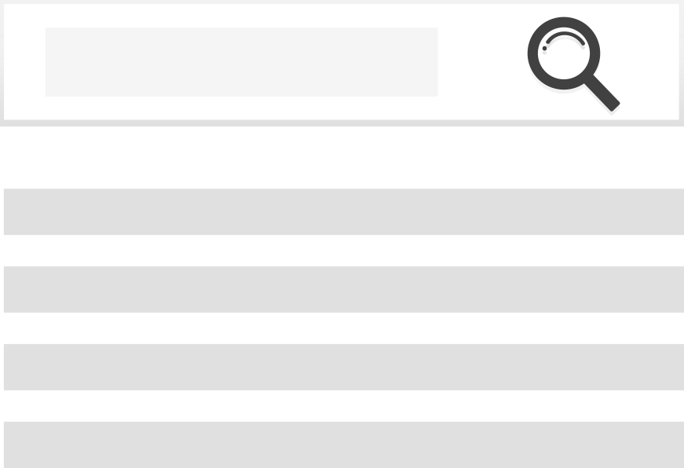
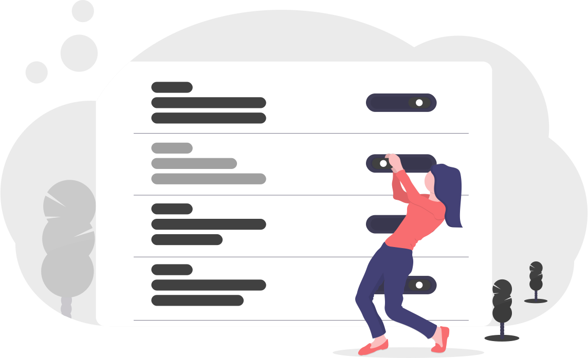

Google Search
A customizable replacement for your browser's home page, with an integrated Google search right where you need it.
Links and Notes
Keep track of your favorite things on the web, at a glance. Add your own custom links to your favorite news sites, like Google News. Additionally, write notes to yourself with our handy note creator.

Color Themes
Choose from different hand-made color themes to suit your style. We understand how awful eye strain can be. That's why we implemented dark mode, to keep your eyes comfortable in any light level.